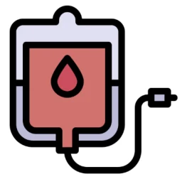

Hepatite B
Aspectos gerais do vírus da hepatite B
O vírus da hepatite B (HBV) pertence à família Hepadnaviridae, gênero Orthohepadnavirus, e a espécie é denominada de Orthohepadnavirus hominoidei pelo ICTV. É um vírus envelopado com cerca de 42 nm de diâmetro. Possui um capsídeo icosaédrico com cerca de 27 nm de diâmetro e um genoma de DNA circular de fita parcialmente dupla.
O genoma do HBV possui 3,2 kb, com quatro fases de leitura abertas (ORFs) sobrepostas denominadas regiões pré-S/S, pré-C/C, P e X, responsáveis pela codificação das sete proteínas virais. Vejamos cada uma dessas regiões a seguir:
A região pré-S/S codifica as proteínas de superfície do HBV (HBsAg) classificadas em small (S), middle (M) e large (L).
Conteúdo a definir.
Conteúdo a definir.
Conteúdo a definir.
Embora seja um vírus com genoma de DNA, do qual se espera maior estabilidade genética, o HBV é altamente diverso, possuindo atualmente dez genótipos, nomeados de A a J, além de subgenótipos, que possuem padrões de distribuição geográficos distintos. Essa variabilidade ocorre principalmente pela etapa de transcrição reversa do RNA pré-genômico realizada pela polimerase viral durante a replicação, a qual é desprovida de mecanismos eficientes de correção, favorecendo o acúmulo de mutações.
Além disso, o HBsAg apresenta determinantes e subdeterminantes (d/y e w/r) que resultam na identificação de oito subtipos: ayw1, ayw2, ayw3, ayw4, ayr, adw2, adw4 e adr. No entanto, o determinante antigênico “a” é comum a todos eles, possibilitando a proteção cruzada entre os diferentes genótipos e sustentando a eficácia global das vacinas contra o HBV.
Transmissão do vírus da hepatite B
O HBV pode ser transmitido principalmente por meio de contato com sangue e outros fluidos corporais contaminados, conforme situações a seguir:

O HBV pode ser transmitido pelo contato com sangue e outros fluidos corporais contaminados, como sêmen, secreções genitais e fluidos provenientes de feridas ou lesões na pele e nas mucosas.

O compartilhamento de agulhas, tesouras, alicates e outros objetos perfurocortantes contaminados favorece a transmissão do vírus.

A transmissão por transfusão de sangue ainda é possível, porém é considerada rara. A adoção de medidas de triagem mais rigorosas nos bancos de sangue diminui significativamente o risco dessa via de transmissão.

Procedimentos odontológicos, cirúrgicos e estéticos podem representar risco de transmissão quando não são adotadas medidas adequadas de biossegurança e controle de infecções.
A transmissão sexual ocorre pelo contato com sangue, sêmen ou secreções vaginais de uma pessoa infectada durante as relações sexuais.
A transmissão pode ocorrer da mãe para o filho durante a gestação ou, principalmente, no momento do parto, quando o recém-nascido entra em contato com sangue e secreções maternas contaminadas.
Profissionais de saúde podem estar expostos ao HBV durante suas atividades, especialmente em situações que envolvam contato com sangue ou materiais perfurocortantes contaminados.
História natural da infecção pelo vírus da hepatite B
A maioria dos adultos imunocompetentes (95%) evolui para a cura espontânea da infecção pelo HBV em alguns meses, enquanto aproximadamente 90% das crianças menores de 5 anos poderão desenvolver a forma crônica. A hepatite B crônica está associada a dano hepático progressivo, podendo, ao longo de anos ou décadas, culminar em cirrose hepática e/ou carcinoma hepatocelular (CHC). A infecção aguda dura até seis meses após a exposição inicial ao vírus, enquanto a infecção crônica é caracterizada pela persistência da detecção do HBsAg por mais de seis meses.
- Em média, de 90 dias, podendo variar entre 60 e 150 dias.
- Quando presentes, os sintomas geralmente são autolimitados, com resolução espontânea em poucas semanas, raramente ultrapassando seis meses de duração.
- O quadro clínico está diretamente relacionado à idade do indivíduo. Em pessoas com mais de 30 anos, aproximadamente 33% desenvolvem sintomas de hepatite aguda, incluindo astenia (cansaço), náuseas, icterícia, febre baixa, perda de apetite e dor abdominal. Já na faixa etária entre 5 e 29 anos essa proporção é de cerca de 11%. Entre crianças com menos de 5 anos, a maioria das infecções é assintomática ou oligossintomática, sendo que apenas cerca de 10% apresentam manifestações clínicas.
- Em alguns casos mais raros (>1%), a infecção aguda pode evoluir para hepatite fulminante, caracterizada pelo desenvolvimento de encefalopatia hepática. Esses casos necessitam de intervenção médica rápida, uma vez que a taxa de mortalidade pode chegar a 80% na falta do transplante hepático.
- A maioria dos pacientes permanece assintomática.
- Quando há manifestações clínicas, estas costumam estar associadas a doença hepática avançada, como cirrose e carcinoma hepatocelular. Nesses casos, podem ser observados sinais como distensão abdominal decorrente de ascite (“barriga d’água”), entre outras complicações relacionadas à insuficiência hepática.
- A fase crônica da hepatite B apresenta diferentes estágios, marcados por interação entre replicação viral e resposta imune, podendo evoluir de fase imunoativa, com elevada replicação viral e inflamação hepática, para a fase inativa, caracterizada por baixa replicação e normalização das transaminases.
- A hepatite B crônica pode permanecer inativa, mas também evoluir para cirrose, descompensação hepática e carcinoma hepatocelular (CHC).
- A progressão é influenciada principalmente pela atividade viral e inflamação hepática, com níveis elevados de carga viral do hepatovírus B associados a maior risco de cirrose, CHC e mortalidade relacionada à doença hepática.
- Mesmo após soroconversão do HBeAg, pode ocorrer reativação da replicação viral, espontânea ou associada à imunossupressão, reforçando a necessidade de acompanhamento e vigilância para CHC.
Você conheceu as principais características do vírus da hepatite B, suas formas de transmissão e as etapas da evolução da infecção. A seguir, vamos entender como funciona o diagnóstico.
Diagnóstico da hepatite B
O HBV possui três principais antígenos, fundamentais para o diagnóstico sorológico:
- HBsAg – Antígeno de superfície (proteína estrutural do envelope viral).
- HBcAg – Antígeno do nucleocapsídeo (“core”).
- HBeAg – Antígeno não estrutural, secretado durante intensa replicação viral.
Esses antígenos, em contato com as células do hospedeiro infectado, estimulam a produção de anticorpos específicos contra o vírus. Observe o quadro a seguir:
| Antígeno | Anticorpo correspondente |
|---|---|
| HBsAg | Anti-HBs |
| HBcAg | Anti-HBc IgM e Anti-HBc IgG |
| HBeAg | Anti-HBe |
Clique em cada antígeno e conheça com mais detalhes a dinâmica de detecção:
A detecção do HBsAg no sangue indica infecção ativa por HBV, seja na fase aguda ou crônica. Esse marcador sorológico é o primeiro a surgir, em geral, entre um e dois meses após a infecção, atingindo seu pico pouco antes do aparecimento dos sintomas. Posteriormente, seus níveis declinam progressivamente, desaparecendo com a resolução da infecção. Por outro lado, a persistência do HBsAg por período superior a seis meses é indicativa de infecção crônica pelo HBV. Atualmente, existem testes rápidos baseados em imunocromatografia para a detecção do HBsAg. O Anti-HBs é o anticorpo específico contra o HBsAg e sua detecção indica imunidade adquirida por uma infecção prévia, resolvida por meio de vacinação.
Conteúdo a definir.
Conteúdo a definir.
Na fase de convalescença, ocorre a soroconversão do HBeAg para anti-HBe, acompanhada do desaparecimento do HBsAg e do surgimento do anti-HBs, evento associado à resolução da infecção e ao desenvolvimento de imunidade. A presença concomitante de anti-HBc e anti-HBs em uma amostra HBsAg negativa caracteriza infecção passada com imunidade adquirida.
Sendo assim, o perfil dos marcadores sorológicos varia de acordo com a evolução clínica da infecção pelo HBV, apresentando padrões distintos na fase aguda e na fase crônica. Sua detecção permite identificar o estágio da infecção e avaliar a atividade viral. Observe a diferença nos esquemas a seguir:
Todos os marcadores sorológicos citados anteriormente podem ser identificados em amostras de soro, plasma ou sangue total utilizando imunoensaios, tais como o teste imunoenzimático (ELISA), quimioluminescência (CLIA) ou eletroquimioluminescência (ECLIA).
Assim como os testes ELISA e ECLIA, explicados anteriormente no diagnóstico de HAV, a CLIA também tem como princípio a interação entre antígeno e anticorpo, levando à emissão de energia luminosa por meio de uma reação química. De maneira geral, na CLIA, utiliza-se um anticorpo monoclonal contra o antígeno analisado fixo a uma microesfera de poliestireno. Quando se adiciona a amostra, o antígeno se liga a esse anticorpo, fixando-se na parte sólida da reação. Em seguida é adicionado um segundo anticorpo monoclonal específico para o antígeno de interesse, mas este está marcado com uma enzima, sendo chamado de conjugado. Nesse momento, é adicionado um substrato quimioluminescente, que, na presença da enzima do conjugado, irá sofrer hidrólise produzindo substâncias instáveis que emitem fótons (luz). Essa luz é, então, detectada e quantificada, e será proporcional à quantidade de antígenos presentes na amostra. A seguir, um infográfico compara as duas técnicas citadas na aula anterior (ELISA e ECLIA) com a técnica de CLIA, de forma a melhorar a compreensão:
Em geral, o rastreamento da infecção pelo HBV é realizado pela detecção do HBsAg a partir de testes rápidos (TR) amplamente disponíveis na rede do Sistema Único de Saúde (SUS), que utilizam amostras de sangue total, obtidas por meio de punção digital. O TR é fundamental para a ampliação do diagnóstico, pois fornece o resultado em minutos e não necessita de uma estrutura laboratorial, podendo ser aplicado em unidades básicas de saúde (UBS), maternidades e em campanhas de testagem.
Os TR, também chamados de testes de imunocromatografia, têm como princípio a migração de antígenos ou anticorpos contidos na amostra por cromatografia por um suporte sólido, geralmente uma membrana de nitrocelulose. Ao final dessa membrana estará fixado um antígeno ou anticorpo na forma de linha ou ponto que se ligará ao analito presente na amostra biológica. Para a detecção de antígenos, como o HBsAg, além dos anticorpos fixados na membrana, pode ser utilizado um segundo anticorpo conjugado a um corante (ouro ou prata coloidal). Nesse caso, o antígeno presente na amostra liga-se a esses anticorpos conjugados formando um imunocomplexo. Após a migração por cromatografia, o resultado é revelado pelo depósito de corante coloidal na linha de captura.
Para detecção de antígenos como o HBsAg, utiliza-se um anticorpo específico conjugado a um corante (ouro coloidal). O HBsAg liga-se a esse anticorpo formando um imunocomplexo. Ao migrar pela membrana, o imunocomplexo é capturado por anticorpos fixados na linha de teste, ocasionando o depósito do corante coloidal e formando uma linha visível.
Clique nas setas laterais e conheça as etapas:
Testes rápidos (TR) - Imunocromatografia
1. Aplicação da amostra
A amostra (soro, plasma ou sangue total) é aplicada no poço (área de amostra) do dispositivo.
Entenda a interpretação dos resultados:
O desenvolvimento de testes moleculares para o HBV representou avanço significativo no diagnóstico, especialmente no acompanhamento da hepatite B crônica.
De acordo com as orientações do Ministério da Saúde (MS), a detecção e a quantificação do DNA do HBV por métodos moleculares, tais como a reação em cadeia da polimerase (PCR), têm sido amplamente utilizadas para avaliar a resposta e a eficácia terapêutica em pacientes com infecção crônica pelo HBV. Também possuem papel essencial na indicação de terapia antiviral profilática durante a gestação, com o objetivo de reduzir o risco de transmissão materno-infantil.
A PCR é uma das técnicas mais utilizadas em laboratórios de pesquisa e diagnóstico. Ela é baseada nos fundamentos da replicação do DNA, permitindo a amplificação de uma sequência específica de DNA (chamada de fragmento-alvo), aumentando exponencialmente o número de cópias desse alvo. Trata-se de uma técnica sensível e específica, que necessitará de alguns reagentes para essa replicação in vitro:
Clique em cada um deles e conheça mais detalhes:
Fará a síntese das novas fitas de DNA utilizando o magnésio (Mg2+) como cofator. Durante a PCR a DNA polimerase amplifica o número de cópias do DNA alvo (molde) ao replicá-lo.
São sequências curtas (15 a 20 nucleotídeos) de DNA sintético complementares a regiões conservadas da região de interesse a ser amplificada. Sua função é se hibridizar no genoma de interesse, no caso no genoma viral, e servir de início para a síntese do DNA pela polimerase. Geralmente utilizam-se dois iniciadores em uma PCR, um senso e um antissenso, que irão determinar o tamanho do fragmento a ser amplificado, bem como a especificidade da reação de PCR.
São as quatro bases nitrogenadas (adenina, timina, citosina e guanina) que serão utilizadas pela DNA polimerase para a síntese das novas fitas durante a amplificação.
O íon Mg2+ atua como cofator da DNA polimerase, aumentando o rendimento da reação e reduzindo o número de erros durante a amplificação.
A PCR ocorre em um pH ideal de 8,3 para a função enzimática da DNA polimerase. Sendo assim, o tampão confere o ambiente ideal para que a reação ocorra conforme esperado.
A reação de PCR ocorre em meio aquoso. A adição de água livre de enzimas como DNases e RNases (capazes de degradar DNA e RNA), inibidores e contaminantes é necessária para ajustar a concentração final dos reagentes e completar o volume final da reação.
É o alvo da reação de PCR presente na amostra biológica a ser analisada.
A PCR é realizada em um equipamento chamado de termociclador, que possui a função de gerar a variação de temperatura e os ciclos necessários para que a amplificação ocorra, seguindo, em geral, as seguintes etapas:
- 1. Desnaturação (separação da dupla fita do DNA molde).
- 2. Hibridização (ligação dos iniciadores por homologia na região alvo do DNA).
- 3. Extensão (amplificação do DNA alvo pela DNA polimerase).
Uma variação bastante empregada no diagnóstico é a PCR em tempo real (qPCR) que permite não só a detecção, mas também a quantificação do DNA viral, permitindo o estabelecimento da carga viral. Os testes de carga viral estão disponíveis no SUS. É visto que títulos mais elevados de HBV-DNA estão relacionados a uma progressão mais rápida da doença hepática. Além disso, a carga viral é um indicador para o início do tratamento e uma maneira de monitorar sua eficácia, que é considerada ótima quando o DNA viral passa a não ser mais detectado. A qPCR é uma técnica extremamente sensível, capaz de detectar de 10-20 UI/mL até 109 UI/mL de HBV DNA.
O diagnóstico da hepatite B irá combinar a aplicação de técnicas sorológicas e moleculares. Segundo o Manual Técnico para Diagnóstico das Hepatites Virais do Ministério da Saúde, para fins de diagnóstico da hepatite B são utilizados o HBsAg, o anti-HBc e o HBV DNA. Os demais marcadores auxiliam no estadiamento da infecção pelo HBV e no monitoramento da doença seguindo o quadro de interpretação dos resultados sorológicos a seguir. Observe o quadro adiante:
| Condição do caso | HBsAg | Anti-HBc Total | Anti-HBc IgM | HBeAg | Anti-HBe | Anti-HBs* |
|---|---|---|---|---|---|---|
| Suscetível/sem contato prévio com HBV | - | - | - | - | - | - |
| Hepatite B aguda | + | + | + | +/- | +/- | - |
| Hepatite B crônica | + | + | - | -/+ | +/- | - |
| Hepatite B cura funcional | - | + | - | - | +/- | +* |
| Imunizado por vacinação | - | - | - | - | - | + |
* Em alguns casos de cura funcional de hepatite B, o anti-HBs não é detectado por estar em baixos títulos, não sendo necessária a vacinação.
Recomenda-se o rastreamento a partir da testagem rápida para o HBsAg ao menos uma vez na vida para todos os indivíduos acima de 20 anos de idade e
Em geral, o processo diagnóstico se dá pela detecção de HBsAg que indica infecção pelo HBV, seguido pela detecção e quantificação do HBV-DNA para fins de conduta clínico-terapêutica. No entanto, o rastreamento com dois marcadores sorológicos realizados concomitantemente, o HBsAg e o anti-HBc Total, é recomendado para pessoas:
- Com HIV e/ou aids (PVHA).
- Com infecção pelo HCV (que receberão tratamento com DAA).
- Com DRC dialítica.
- Com hepatopatia crônica ou CHC sem diagnóstico etiológico.
- Usuárias de drogas injetáveis (UDI).
- Com imunossupressão ou que serão submetidas à terapia imunossupressora e/ou quimioterapia.
- Doadoras de sangue, tecidos, órgãos ou sêmen.
Essa recomendação ocorre pela maior frequência de hepatite B oculta e/ou pelo risco de reativação viral nessas situações. A infecção oculta por HBV é definida como a persistência do DNA do HBV no tecido hepático e/ou soro em indivíduos negativos para o HBsAg. Embora geralmente esteja associada à baixa carga viral, a hepatite B oculta apresenta relevância clínica devido ao risco de transmissão e reativação viral em situações de imunossupressão, contribuindo para dano hepático e evolução para CHC.
Mais informações sobre o diagnóstico da hepatite B estão disponíveis no Manual Técnico de Diagnóstico das Hepatites Virais, publicado pelo Ministério da Saúde. Confira também o PCDT - Protocolo Clínico e Diretrizes Terapêuticas de Hepatite B e Coinfecções.
Prevenção da hepatite B
A vacina para hepatite B é o método mais eficaz de prevenção contra o HBV. Ela está disponível no SUS para todas as pessoas não vacinadas, independentemente da idade, mas é importante destacar:
- Para crianças, a recomendação é que se façam quatro doses da vacina, sendo: ao nascer, aos 2, 4 e 6 meses de idade (vacina pentavalente);
- Para a população adulta, usualmente o esquema completo se dá com aplicação de três doses;
- Para a população imunodeprimida deve-se observar a necessidade de esquemas especiais com doses ajustadas, disponibilizadas nos serviços de saúde que compõem a Rede de Imunobiológicos para Pessoas em Situações Especiais (RIE).
Outros planos de prevenção incluem a adoção de medidas que interrompam a cadeia de transmissão do vírus, tais como:

Evitar o compartilhamento de objetos perfurocortantes e de uso pessoal como agulhas, seringas, lâmina de barbear, equipamentos de manicure e pedicure.

Utilizar preservativos em todas as relações sexuais.

Adotar protocolos de biossegurança (inclusive para colocação de piercings e tatuagens).
A triagem dos doadores de sangue a partir dos marcadores sorológicos (HBsAg e anti-HBc) e pela detecção do HBV-DNA resultou em diminuição significativa da transmissão associada à transfusão sanguínea.